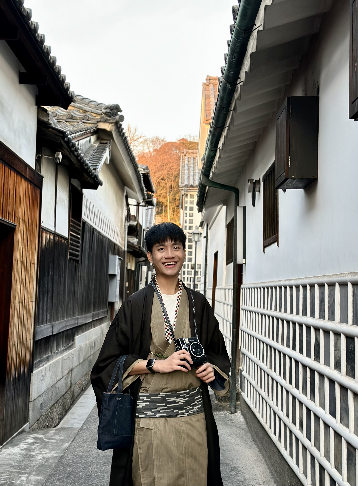
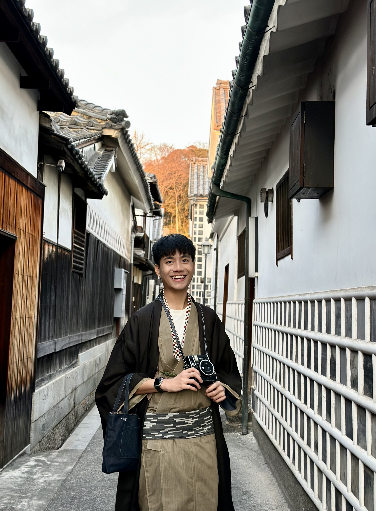

關於我
| "An unexamined life is not worth living."-Socrates |我是地理三甲的葉智信！來自一個沒有四季交替的國家——馬來西亞。
來臺灣留學已邁入第三年，在同儕、老師、學長姐們的幫助下收穫與成長了不少！
非常感恩這些年來遇見的所有人、事、物，帶給我從未有過的體驗。
未來的目標是希望有機會留在台灣就職！
看不到我看不到我
我是地理三甲的葉智信！來自一個沒有四季交替的國家——馬來西亞。
來臺灣留學已邁入第三年，在同儕、老師、學長姐們的幫助下收穫與成長了不少！
非常感恩這些年來遇見的所有人、事、物，帶給我從未有過的體驗。
未來的目標是希望有機會留在台灣就職！
看不到我看不到我
看不到我看不到我
| School | Status | Country | Time |
|---|---|---|---|
| Foon Yew High School Kulai | Graduate | Malaysia | 2015-2020 |
| National Taiwan Normal University | Studying | Taiwan | 2021-now |